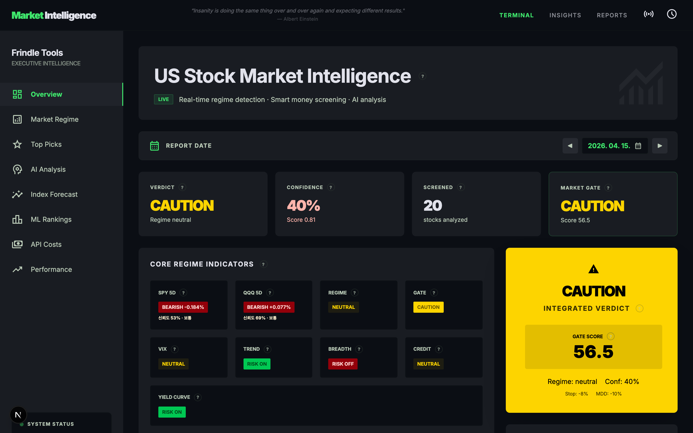
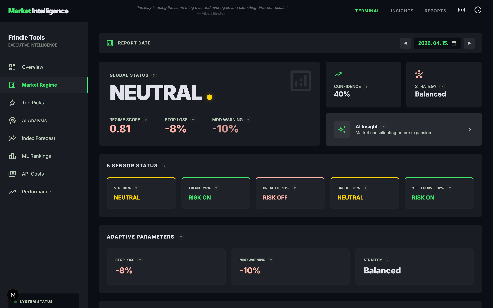
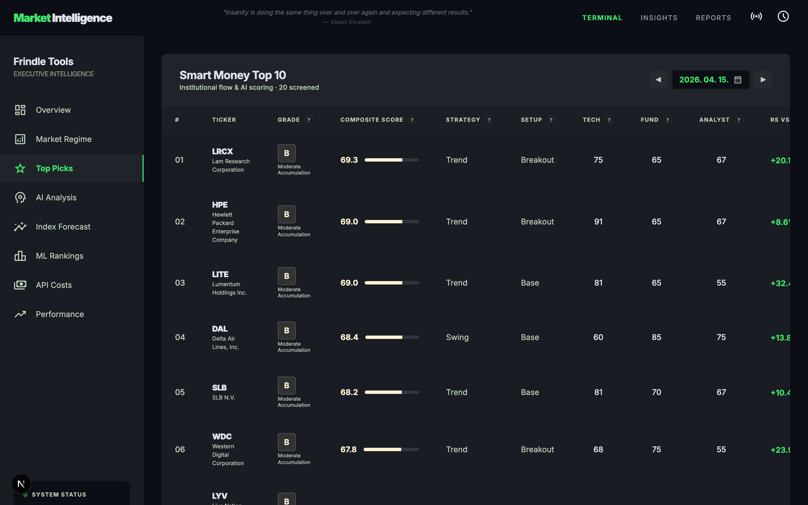
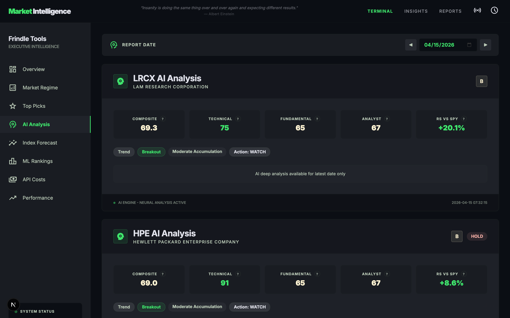
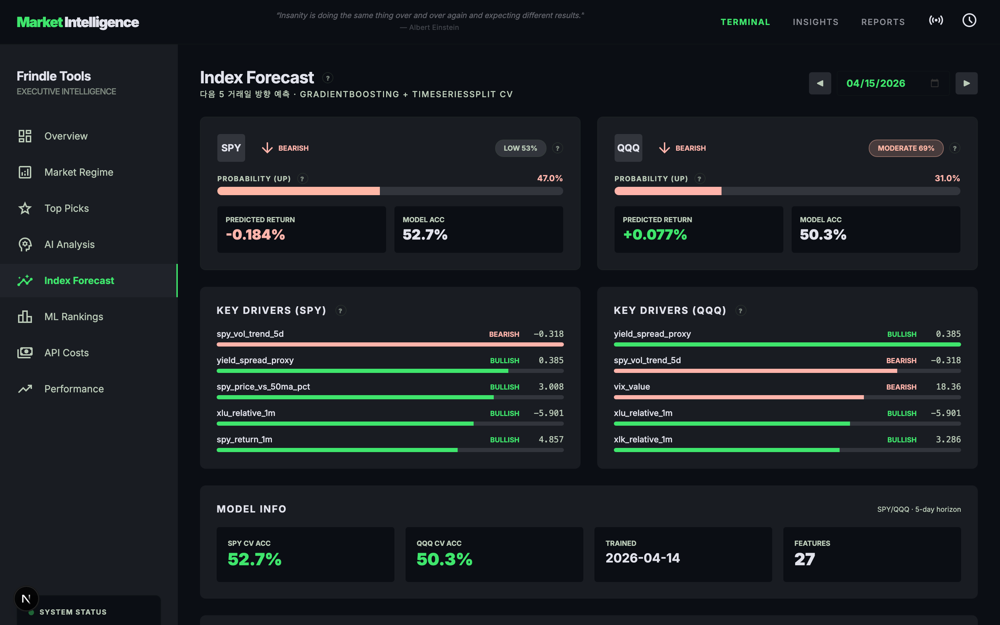
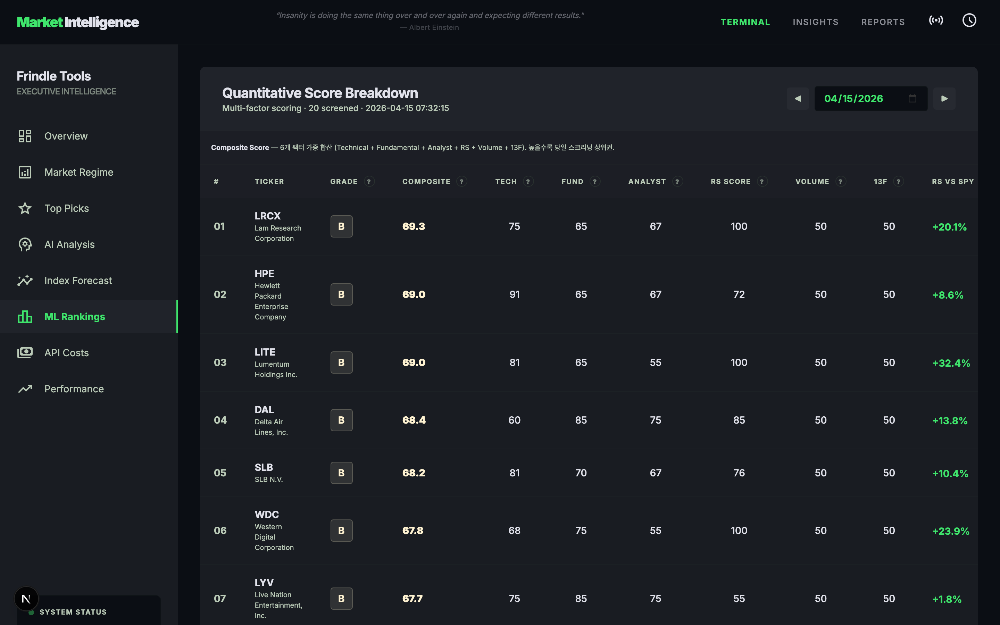

프린들tv
2026 봄 특강
NOTICE
6년 만의 오프라인 강의 · 다음 강의는 12년을 기다릴 수 있습니다
선착순 마감
Why Now
AI를 모르는 투자자는
매년 두 달치 시간을 그냥 버립니다
매년 두 달치 시간을 그냥 버립니다
사람이 종목 하나를 분석하는 데 평균 30분이 걸립니다. AI를 쓰는 투자자는 같은 일을 6초에 끝냅니다. 500종목으로 환산하면 연간 500시간 — 두 달치 근무 시간이 매년 격차로 쌓입니다.
문제는 AI 도구가 없는 게 아닙니다. 투자에 어떻게 붙이는지 아는 사람이 없는 겁니다. ChatGPT에 "이 주식 사도 돼?"라고 묻는 건 AI 활용이 아니라 점괘 보기입니다. 원칙이 먼저, 도구는 그다음입니다. 순서가 바뀌면 손실만 자동화됩니다.
INSIGHT
"세상에는 두 종류의 투자자가 있다. 시스템을 가진 사람, 그리고 시스템에 끌려가는 사람."
For Who
이런 분이라면
3시간이 1년치 시행착오를 줄여줍니다
3시간이 1년치 시행착오를 줄여줍니다
Instructor
강사 소개

Frindle
프린들tv 운영자, 금융그룹 조직장, AI 컨설턴트, 퀀트 시스템 개발자
미국주식 20년. YouTube 구독자 42,000명, 영상 112편.
동시에 150평 만화카페 사장, AI 컨설턴트, 퀀트 시스템 개발자.
12개 역할을 7시간 수면으로 소화하는 비결:
Claude Code 4계정 + 17개 MCP 서버 + 500종목 자동 분석 시스템.
동시에 150평 만화카페 사장, AI 컨설턴트, 퀀트 시스템 개발자.
12개 역할을 7시간 수면으로 소화하는 비결:
Claude Code 4계정 + 17개 MCP 서버 + 500종목 자동 분석 시스템.
42,000
YouTube 구독자
112
주식 영상
20년
투자 경력
12
동시 역할

12 Roles — AI 없이 불가능한 삶의 증거
ROLE 01
금융그룹 조직장
데이터 플랫폼 AI 전략·사업 총괄
ROLE 02
150평 만화카페 사장
웹/앱 직접 개발. 마케팅·인테리어·소송까지 직접 처리
ROLE 03
주식 투자 강사
프린들tv 112편. 온라인 과정 7파트 555슬라이드
ROLE 05
AI 컨설턴트
금융사 생성형 AI 도입 자문. CSP 안정성 평가·규제 대응
ROLE 06
퀀트 시스템 개발자
Market Intelligence Terminal 직접 구축. 月 $33.50
Curriculum
3시간 커리큘럼 — 7개 섹션
Live Demo
Market Intelligence Terminal
— 실제 화면
— 실제 화면
Section 03에서 라이브 시연합니다 · edu.frindle.synology.me
6개 화면 전체 공개

Overview · 종합 판정

Market Regime · 시장 체제

Top Picks · Smart Money

AI Analysis · 투자 논지

Index Forecast · SPY/QQQ

ML Rankings · GBM 스크리닝
Investment Principles
3단계 투자 원칙
— 오늘 이것만 기억하세요
— 오늘 이것만 기억하세요
"1단계를 할 수 있으면 1단계. 못하면 2단계. 그것도 못하면 3단계. 핑계가 없습니다."
1
STEP 01 · ADVANCED
Smart Money를 따라가라
기관과 헤지펀드가 매집하는 종목을 추적한다. 13F 공시, 거래량 이상, 기관 보유 비중 변화를 확인 후 진입한다. Market Intelligence Terminal 6-Factor Screening으로 자동화 가능.
▶ 근거: Market Intelligence Terminal 6-Factor Screening
2
STEP 02 · INTERMEDIATE
오르는 주식을 사라 (터틀 기법)
이미 오르고 있는 주식을 산다. 떨어지는 칼날을 잡지 않는다. 52주 신고가 돌파, 이동평균선 정배열, 거래량 확인 후 진입한다.
▶ 근거: Richard Dennis 터틀 트레이딩
3
STEP 03 · BEGINNER
그것도 못 하면 ETF를 사라
종목 선정이 어려우면 SPY/QQQ를 떨어질 때 조금씩 산다. 매달 적립, 10년 복리. 이것만 해도 상위 20%에 든다.
▶ 근거: 버핏 "인덱스 펀드에 투자하라"
What You Get
3시간 후, 당신이 들고 나가는 것
✓
3단계 투자 원칙 — 종목 선정부터 매수·매도까지, 핑계 없는 기준
✓
500종목 AI 분석 설계도 — 月 $33.50으로 구축하는 방법
✓
Claude Code 비용 최적화 3가지 — $800→$400 설정법
✓
YouTube 112편 QR 딥링크 — 섹션별 핵심 영상 즉시 연결
✓
한투 API 자동매매 구조도 — 분석에서 주문까지 연결 설계
✓
강의 핵심 자료 — 3단계 원칙 · 통계 · 커리큘럼 요약본
"아는 것과 하는 것 사이에는 강이 있다.
그 강은 도구가 아니라 원칙으로 건넌다." — Frindle
그 강은 도구가 아니라 원칙으로 건넌다." — Frindle
신청 안내
투자 원칙과 AI 무기를
3시간 안에 한 번에 들고 나갑니다
3시간 안에 한 번에 들고 나갑니다
프린들tv · 미국주식 투자 채널
YouTube 42,000명 구독 · 주식투자 영상 112편
youtube.com/@TV-vv1oc · edu.frindle.synology.me
본 강의 자료는 투자 교육 목적이며 특정 종목 추천이 아닙니다.
투자 결정은 본인 판단과 책임하에 이루어져야 합니다.
youtube.com/@TV-vv1oc · edu.frindle.synology.me
본 강의 자료는 투자 교육 목적이며 특정 종목 추천이 아닙니다.
투자 결정은 본인 판단과 책임하에 이루어져야 합니다.